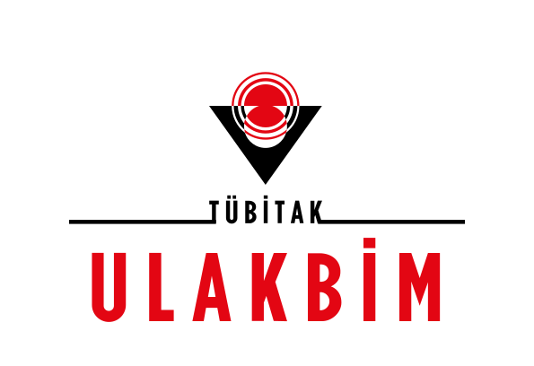
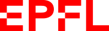
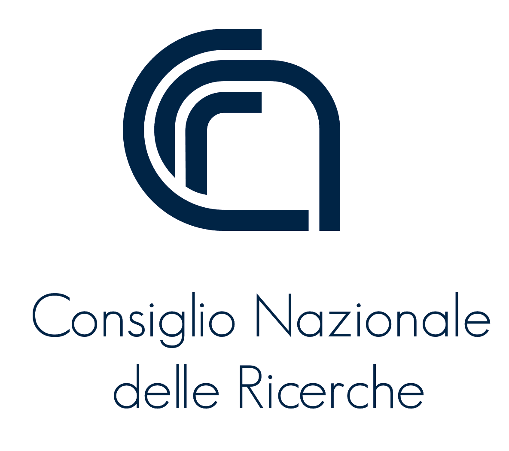
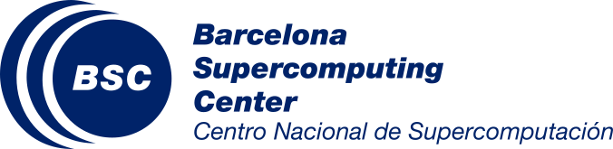
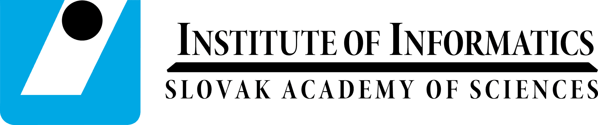
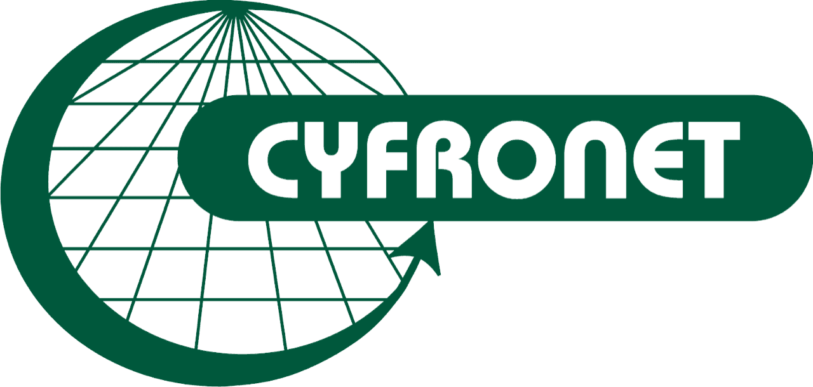

EuroScienceGateway
Improving computational workflows in Galaxy by maturing Pulsar Network and publishing computational workflows as FAIR Digital Objects.
- Status
- EndedFinal month: Aug 2025
- Duration
- Sep 2022 – Aug 202536 months
- Funding
- Horizon EuropeHORIZON-INFRA-2021-EOSC-01-04
On this page
This project ended in August 2025. This page is kept as its record: summary, objectives, results, past events, news and partners.
Project summary
In the past decade, many scientific domains have been transformed into data-driven disciplines relying on the exchange and integration of internationally distributed data. Exploiting this data is still a laborious and largely manual task, prone to losses and errors, and increasingly specialized beyond most users technical capabilities. FAIR practices are encouraged but their adoption curve is steep. The needs for compute and data resources, tools, and application platforms are often domain-specific.
Many scientists struggle to navigate this intricate ecosystem. Generally, researchers do not possess the computing skills to effectively use the HPC or Cloud platforms they need. Thus, new approaches are needed to enable all researchers, with widely ranging digital skills, to efficiently use the diverse computational infrastructures available across Europe, for asynchronous and for interactive applications.
EuroScienceGateway will leverage a distributed computing network across 13 European countries, accessible via 6 national, user-friendly web portals, facilitating access to compute and storage infrastructures across Europe as well as to data, tools, workflows and services that can be customized to suit researchers’ needs. At the heart of the proposal workflows will integrate with the EOSC-Core. Adoption, development and implementation of technologies to interoperate across services, will allow researchers to produce high-quality FAIR data, available to all in EOSC. Communities across disciplines -- Life Sciences, Climate and Biodiversity, Astrophysics, Materials science -- will demonstrate the bridge from EOSC's technical services to scientific analysis.
EuroScienceGateway will deliver a robust, scalable, seamlessly integrated open infrastructure for data-driven research, contributing an innovative and customizable service for EOSC that enables operational open and FAIR data and data processing, empowering European researchers to embrace the new digital age of science.
Objectives
Objective 1
Accessible e-Infrastructure resources for European scientists to enable pioneering data-driven research across scientific domains.
Objective 2
Support the varieties of analysis types and diverse usage patterns through efficient and smart job distribution to appropriate and sustainable infrastructures.
Objective 3
The application of FAIR principles to workflows and adoption of FAIR Digital Objects to stimulate reusable and reproducible research and enable the EOSC Interoperability Framework.
Objective 4
Adoption of the EuroScienceGateway by researchers in diverse scientific disciplines.
Work packages
EuroScienceGateway is organized into multiple work packages, each with its own focus.
- WP1Project Management, Coordination and Dissemination.News for work package 1
- WP2Stimulate FAIR and reusable research.News for work package 2
- WP3Pulsar Network: Distributed heterogeneous compute.News for work package 3
- WP4Building blocks for a sustainable operating model.News for work package 4
- WP5Community engagement, adoption and onboarding.News for work package 5

Expected results
Pulsar Network
A mature and tested (TRL-9) distributed compute network with demonstrated usage across at least 12 European partners.
ScienceGateways
6 national Galaxy instances operational and proven by the scientific community with more than 100,000 users.
Communities
Science Gateway with a custom set of tools and workflows for the Biodiversity/Climate, Materials Science and Astrophysics community.
FAIR data
EOSC-catalogued FAIR data and workflows that can be found, consumed, created and published by users of the EuroScienceGateway, demonstrated for each of the 3 domain-specific use-cases.
Target groups, outcomes and impact
Target Groups
- European Scientistsdirect target group
- Access to tools, workflows, storage and compute resources will enable breakthrough research across disciplines.
- Users of public datadirect target group
- This project will facilitate making high quality, validated FAIR data and workflows, which is crucial for re-use by the scientific community.
- EOSCdirect target group
- EuroScienceGateway will contribute to the adoption of e.g. e-Infrastructures and FAIR publishing services of EOSC across domains, lowering the barrier for cross-disciplinary research. This project will increase the use and adoption of EOSC endorsed principles, standards and technologies, as defined by the research infrastructures and various EOSC-related projects.
- Education systemindirect target group
- The open and accessible EuroScienceGateway can be used to train and educate students and citizens. The ecosystem provides both specific tools and resources for training, as well as the ability to use the exact same system to perform research at scale.
- European funding agenciesindirect target group
- Computing resources are used more efficiently, duplication of effort to port existing methodologies due to infrastructure limitations will be avoided and re-use of resources and technologies across scientific domains will be stimulated.
Outcomes
- Communities
- Onboarding of new scientific communities in the EuroScienceGateway ecosystem, demonstrated by new users and increased usage per user, and contribution of new tools, workflows and resources to the EuroScienceGateway. Inclusion of the established network in proposals for innovative research projects of multiple disciplines as well as EOSC-related infrastructure oriented and trans-national access to research infrastructure projects.
- Scientific
- Transform the way scientists create, share and exploit data and metadata (like workflows) resulting in higher quality research and more innovation.
- Resource providers
- Implementation of the middleware developed in this project by resource providers not part of the consortium.
- Global
- Alignment with similar American and Asia-Pacific initiatives. Building a global network of shared resources for all scientists.
Impact
- Scientific
- The EuroScienceGateway is envisioned as an enabler of breakthrough scientific discoveries in various scientific fields.
- EOSC
- Increased visibility of the European Science Cloud to end-users.
- Economic/Technological
- Adoption and efficient usage of resources provided by the e-Infrastructures. Scaling of data analyses will be facilitated e.g. by eliminating the steep learning curve to use new computational infrastructure unfamiliar to the researchers.
- Societal
- Raised awareness of public academic resources/clouds and contribute to the practical implementation of FAIR principles for data, software and workflows.
Past events9 shown
View all past ESG eventsNewsLatest 6 of 139
All 139 articlesThe Galaxy Europe team at the ELIXIR All Hands Meeting 2026
The Galaxy Europe team has participated in the ELIXIR All Hands meeting 2026 in Lyon, France.
Using Galaxy webhooks to nudge users toward better tools
A small tool-form extension can mark legacy tools as deprecated, keep them available for reproducibility, and guide users toward faster and more efficient alternatives.
Galaxy for Managing Workflows for the Next Generation of Compact Particle Accelerators
Researchers at STFC are developing vEPAC, a Galaxy-based end-to-end simulation framework for compact plasma accelerators, integrating laser modelling, plasma dynamics, and radiation transport into a unified computational workflow.
Galaxy Powers FAIR Data: The BERD@NFDI B-Plan Use Case Shines at EOSC Symposium 2025
At the EOSC Symposium 2025, a standout example was the BERD@NFDI B-Plan use case, a project demonstrating how the Galaxy Europe platform provides the analytical engine to transform complex, unstructured planning data into FAIR research assets for the entire European research community.
Galaxy Tool Wrapping: Introducing the New Tool Developers SIG
Join the newly formed Tool Developers Special Interest Group (SIG) to collaborate on high-quality tool maintenance and standardize best practices across the Galaxy ecosystem. This initiative offers a dedicated space for mentorship, peer review, and community-driven development for developers of all experience levels.
From Plume to Bloom: Data Terra and Galaxy illuminated extreme event observation at EOSC Symposium 2025
Data Terra, the EOSC thematic node for the environment, demonstrated how the Galaxy platform accelerates environmental research through interoperable, FAIR data workflows within the EOSC Federation. From satellite plumes to ecosystem blooms.
Project partners19 organisations
- VIB (external site)

- The University of Manchester (external site)
- University Paris (external site)

- Universita Degli Studi Frienze (external site)

- UK Research and Innovation (external site)

- Universitat de Barcelona (external site)
- TÜBİTAK (external site)

- University of Oslo (external site)

- AGH University of Science and Technology (external site)
- Istituto Nazionale di Fisica Nucleare (external site)

- EPFL (external site)

- cnrs (external site)

- Consiglio Nazionale delle Ricerche (external site)

- cesnet (external site)

- Barcelona Supercomputing Center (external site)

- Institute of Informatics - SAS (external site)

- Advanced computing for research (external site)

- ACK Cyfronet AGH (external site)

- University of Freiburg (external site)